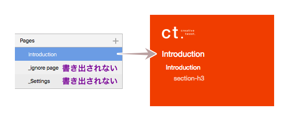
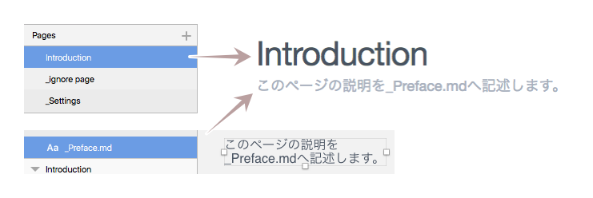
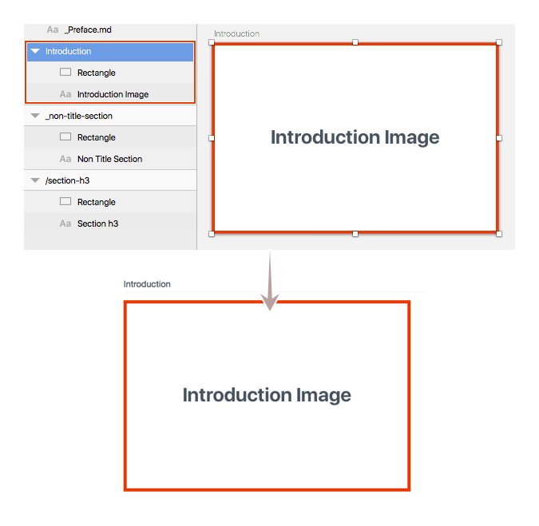
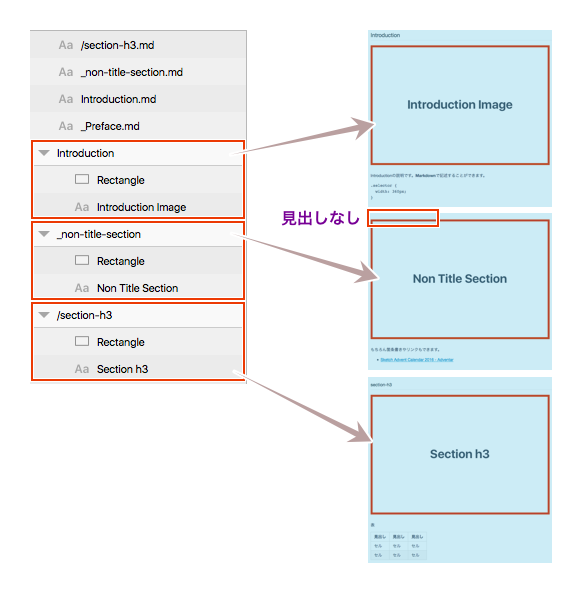
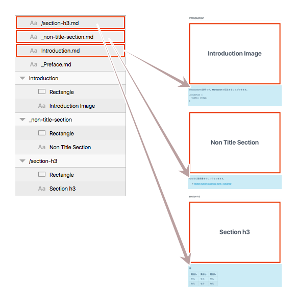
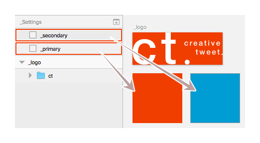

Sketchプラグインを適当に選んで紹介していく、Sketch Plugin Advent Calendar 2016 ラストの25日目は、SketchからドキュメントをHTMLとして書き出せる「Design Doc」です。
デザインガイドラインをはじめとしたドキュメントを、SketchからHTMLとして書き出してしまおうというプラグインです。そうしたプラグインは色々とあるのですが、Sketch内にテキストを置いておけばそのままテキストとして書き出しされるため、きちんと説明をつけることも可能です。
ページとドキュメント構成
ページとアートボードを使って階層を作ります。
ページ
ページ単位でHTMLとして書き出され、ページ名がHTMLファイル名に対応します。書き出したくないページは、ページ名に「_（アンダーバー)」の接頭辞をつけると対象外になります。またSymbolsページも書き出しの対象外です。

ドキュメント
ページのタイトルには、Sketchのページ名が設定されます。ページタイトルの下には、_Preface.mdと名付けたテキストレイヤーの内容が書き出されます。.mdの名が示す通り、この説明はマークダウンで記述ができます。またテキストレイヤーはキャンバスへ直接配置すればOKです。

アートボードへオブジェクトを作成することで、図として書き出されます。書き出しサイズは@2xです。

またアートボードをセクションとして扱います。名前に接頭辞をつけることで、セクションのレベルを設定します。接頭辞なしが最上位レベル（HTML的にh2）、「_」はレイヤーリストで上にあるアートボードに続くドキュメントとして定義されます（セクション自体は生成されます）。「/（スラッシュ）」が接頭辞なしの中にセクション（HTML的にh3）を作ります。書き出された左側のナビゲーションにも反映されます。

レイヤーリスト上のアートボードの並びは、そのままナビゲーションとドキュメントの並びに対応しますので、整理しておきましょう。
ドキュメントのテキストは、アートボード名と同じテキストレイヤー名＋.mdとすると、そのテキストが説明としてドキュメントへ書き出されます。こちらもマークダウンで書くことができます。レイヤー名で関連付けられるため、キャンバスへ直接配置しレイヤーリスト上の並びも無視して問題ありません。

設定
_Settingsページを作成し次のオブジェクトを作成すると、ドキュメント内の設定が可能です。
_logoアートボードを作成し、オブジェクトを入れておくと、ナビゲーションの上に配置するロゴとして使われます。
_primaryレイヤーに設定されている塗りは、ナビゲーションの背景色として使われます。_secondaryレイヤーを作成すれば、ドキュメント内のリンク色として使われます。どちらのレイヤーもキャンバスへ直に配置しておけばOKです。ただし、明度の高い色はリンクが見えなくなるため、オススメしません。

書き出し
Pluginsメニューから、「🐻 Export Design Doc」を実行し、保存するフォルダを選択すれば「designdoc」フォルダが書き出されます（プラグイン名に絵文字使うのやめてほしい……）。
HTMLは固定レイアウトなので、大きいイメージがあるとウィンドウ幅によっては横スクロールが表示されてしまいます。気になる場合は、CSSを編集すれば良いかもしれません。
スタイルガイドをはじめとしたドキュメントを生成するツールは色々とありますが、このプラグインはSketchだけで完結しますので、簡易のドキュメントや図が多いマニュアルなどをつくる場合に活用してみてはいかがでしょうか？
最後まで読んでくださり、ありがとうございました。
今回はクリスマスプレゼントとして、InVision Craft Prototypeが使えるライセンスキーを1名さまへ差し上げたいと思います（お持ちの方はごめんなさい）。
この記事をはじめとした、Sketch Advent Calendar 2016で「これがいいな」と思った記事のURLへ、「ライセンス欲しい」と付け加えてツイートしてください（なければこの記事のURLで）。文字数的に入らない場合は「欲しい」だけでもOK、ツイートボタンでは私のアカウント名（@littlebusters）が入っているので、それも削除でOKです。
できればきちんと使ってくださる方へ差し上げたいので、その意思確認として**「ライセンス欲しい（または欲しい）」の文字がないと無効**とします。また、確認する術がないため、いわゆる鍵アカでのツイートやほかのSNSでの共有も無効です。
30日ぐらいで締め切りをツイートし、抽選後 ご本人へ通知します。
それでは、楽しいSketchライフを。Happy Holidays!! 🎉